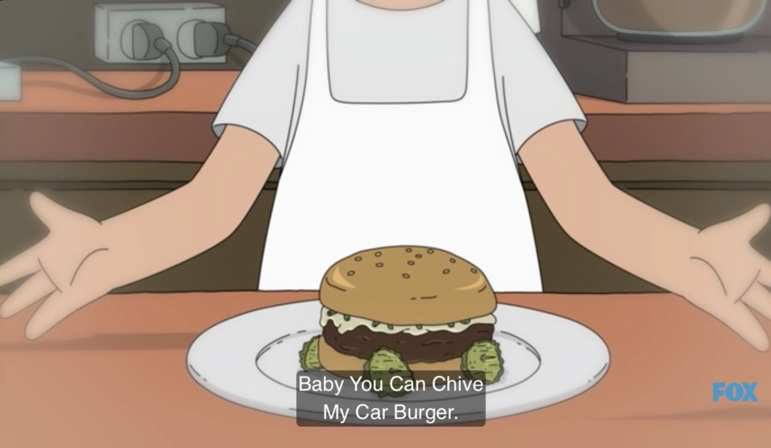

Baby You Can Chive My Car Burger

Description
A feta-stuffed burger topped with diced chives and a creamy
sour cream and mustard spread. Comes with fried pickles
four wheels (because it's a car, get it)
Ingredients
- 1/2 cup all-purpose flour
- 2 tablespoons Cajun seasoning
- 1 tablespoon salt
- 1 12- or 16-ounce jar dill pickle chips
- 1 egg
- 1/4 cup milk or buttermilk (optional)
- Canola or vegetable oil, for frying
- 1/2 cup feta cheese, crumbled
- 1 pound ground beef
- 1/2 cup sour cream
- 2 tablespoons Dijon mustard
- 1/2 cup finely chopped chives
Steps
Make the Pickles
- Combine the flour, Cajun seasoning, and salt in a large bowl.
Pat the pickle chips dry
- Beat the egg in a small bowl. Drain the pickles chips,
then dip in the egg, then dredge in the flour mixture to coat
Add the optional milk or buttermilk to your egg if you're having
trouble getting the flour to stick to the pickles or getting the flour
to stick to the pickles or getting an even coat
- Heat 2 to 3 inches of oil to about 350 F in a large pot over medium high
heat. Fry the pickles in small batches until golden, transferring fried
pickles to paper towels with a slotted spoon. Check your oil temperature
between batches
Make the Burgers
- Carefully fold the feta into the beef. Form 4 patties, and season both sides
lightly with salt and pepper
- Cook the patties as you normally would
- Mix the sour cream, mustard, and chopped chives. Spread generously on the top bun.
- BUILD YOUR BURGER: Bottom bun, burger, top bun with spread. Attach 4 fried pickles
with tooth picks to the side of the bottom bun as if they were wheels. You saw
this episode, right? Serve while making little car sounds, vroom, vroom.
Optionally, beep beep.